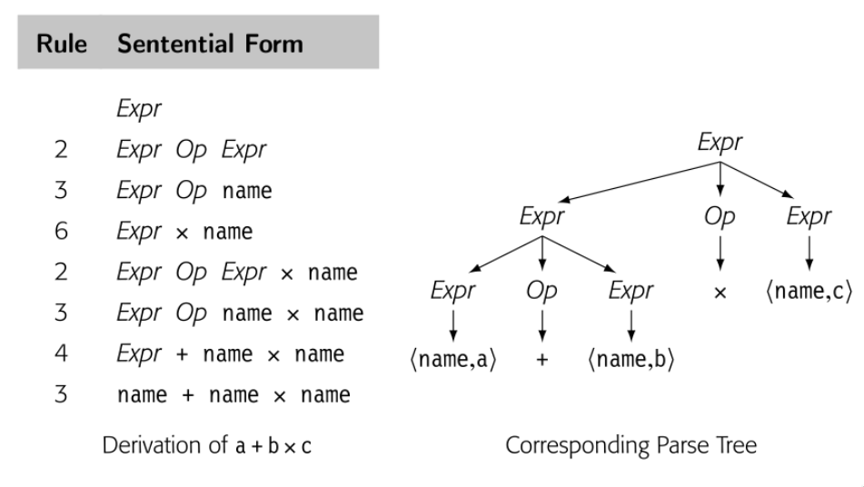
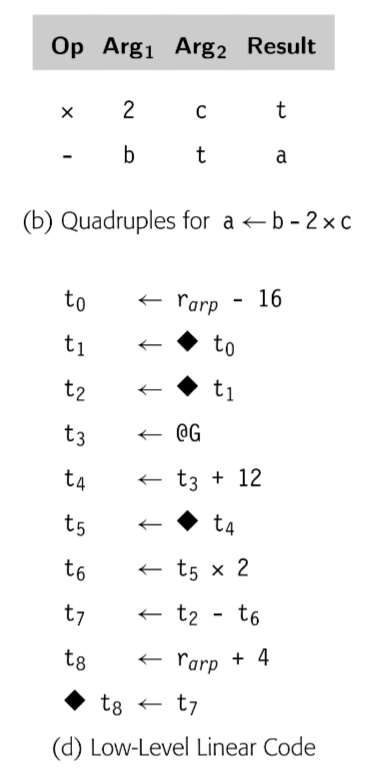

typora-copy-images-to: assets/${filename}
parser 的任务是判断 scanner 分词之后的输入程序是否编程语言的有效语句。为了做到这一点， parser 尝试用描述编程语言语法对输入程序建立 derivation。
本章介绍 context-free grammars 来描述编程语言语法。发展出了 top-down 和 bottom-up 解析技术。它们描述了自动构建两种类型 parser 的方法。最后，讨论 parser 构造中出现的一些实际问题。
record
SLR -> simple LR
LALR -> lookahead LR
Parsing 是编译器前端的第二个阶段。 parser 使用 scanner tokenized 之后的程序，可以看做带有句法分类标注的单词流。 Parser 派生出程序的语法结构，将单词们匹配到源语言的语法模型中。如果 parser 判断输入程序是有效的，就会建立起程序的具体模型，中间表示（an intermediate representation），给编译器后续步骤使用。如果 parser 发现错误，报告错误以及错误位置给用户。
parsing 和 scanning 是相似的。与 scanning 一样， parsing 也被广泛研究；现代 parser 就建立在这些理论之上。速度是至关重要的；我们将要研究的所有技术时间开销都与程序大小以及表现形式正相关。底层细节影响性能；parsing 和 scanning 一样会有实现上的权衡。本章的技术可以实现为 table-driven parser, direct-coded parser, hand-coded parser。不像 scanner 中手写那么常见，parser 更多的是工具生成。
Conceptual Roadmap
parser 的主要任务是判断输入程序是否语言有效。在我们建立 parser 回答这个问题之前，我们既需要一种形式化机制来描述源语言的语法，也需要一种系统化的方法来确定形式化语言中的元素。通过约束源语言形式限制为一组 context-free 语言，我们可以确保高效算法来回答元素问题。Context-free grammar(CFGs) 是用于指定 context-free 语言的符号。
很多算法已经被提出来回答 CFGs 的元素问题。本章讨论两种不同的方法：top-down parser 和 bottom-up parser。这两种类型的解析器主要是方法和实现的不同。但是两种类型都可以处理很大一类语法，基本包括现代语言的大多数语言结构。同样重要的是，工具广泛用于辅助编译器开发者构建 top-down parser 和 bottom-up parser。本章探讨了用于自动化 parser 构造的技术和方法。
Overview
编译器的 parser 主要是要负责识别语法--也就是说，用于判断正在编译的程序是否编程语言语法模型中的有效语句。这个模型描述为形式话语法 G；如果单词 s 的字符转在 G 中，我们说 G derive s。对于单词流和 grammar G，parser 试图建立结构证明 s 可以被 G derived 的过程称为 parsing。
Parsing 算法主要分成两大类。Top-down parsers 试图预测下一个单词将输入流与语法匹配。对于一类有限的语法，这样预测准确且高效。3.3 小节详细探讨了 top-down parser 的工作和用于创建它的技术。同时探讨了 recursive-descent 和 LL(1) parsers 的结构。Bottom-up parser 是从底层细节--单词的真实序列--开始工作，积累上下文知道 derivation 非常明显为止。同样的，存在一类语法，可以生成高效的 bottom-up parser。3.4 小节探讨了一类特殊的 bottom-up parser，table-derive LR(1) parser，以及生成这种高效 parser 技术。最后的小节探讨了一系列 parser 构建中实际会出现的问题。
Recuisive-descent parsers: 是 hand-coded 的 top-down parsers。紧凑而且高效
LL(1) parser: 是 table-driven，top-down parser。可以识别一类 grammars，基本包括了大多数有趣的编程语言特性
LR(1) parser: 是 table-driven，bottom-up parser。识别比 LL(1) 更大范围的 grammars
A Few Words About Time
设计，构建和使用 parser 跨越了整个编译过程。设计期间，编译器开发者选择一种解析方法和工具集。然后创建工具识别的源语言的 CFG。
在构建期间，编译器开发者通过工具构建可执行的 parser 。在手写的 parser 中，代码直接被编译。在生成的 parser 中，调用 parser 生成器的过程从 CFG 和其中的标注构建 parser；然后编译代码成可执行文件。
最后，在编译期间，parser 分析源代码的 token。将单词流映射到 CFG 或者识别出不匹配。如果输入程序是正确的，生成 IR 给接下来的编译过程使用。如果输入包含错误，parser 报告给开发者。
typora-copy-images-to: assets/${filename}
parser 的任务是确定某些单词流是否匹配 parser 预期的源语言语法。在这个描述中隐含的我们可以描述语法并检查它的概念；实际上我们需要符号来描述人们可能用于计算机编程语言的语法。在第 2 章中，我们使用这种符号，正则表达式。RE 可以精确的描述有限符号。RE 描述可以产生高效的识别器。不幸的是，RE 缺少描述大多数编程语言完整语法的能力。
对于大多数编程语言，语法用 CFG 表示。本节介绍 CFG 并探讨它们在语法检查中的使用。它展示了如何编码为语法和结构。最后，介绍了后面章节描述的高效解析技术的基本思想。
3.2.1 Why not use regular expressions?
为了表明为什么使用 CFG，考虑识别名称和运算符 \(+, -, \times, \div \)代数表达式问题。我们可以定义 "name" 匹配 RE [a..z]([a..z]|[0..9])*的字符串，简化的 algol identifier 小写字母版本。现在我们定义:

这个 RE 匹配 \(a + b \times c\) 和 \(e + f \div g\)。RE 中没有操作优先级的概念，在 \(a + b \times c\) 中，哪个操作符先执行？是 \(+\) 还是 \(\times\) ？标准算术运算规则乘除先于加减。为了强制运算顺序，正常的算术表达式包含了括号。
我们可以在 RE 中中加入合法括号吗？

这个 RE 可以匹配 \(a + b \times c\) 或者 \((a + b)\times c\)。可以匹配任意正确括号的名称和四个运算符的表达式。不幸的是，也可以匹配语法不正确的表达式比如 \( a + (b \times c\) 或者 \(a + b)\times c \)。事实上，我们不能写出一个 RE 来匹配配对的括号的表达式。（成对的结构，比如 begin 和 end 或者 then 和 else，在大多数编程语言中扮演了重要的角色）
无法匹配括号，无论是(), {}还是 begin end 是 RE 的基本限制，相应的识别器无法计数，因为它们是有限状态集。\( (^n )^n \)不是 regular。原则上，DFA 无法计数。确实它可以在 microsyntax 工作的很好，但是不适合描述一些重要的编程语言特性。
3.2.2 Context-Free Grammars
为了描述编程语言语法，我们需要比 RE 更强大的符号记法。传统的方案是使用 CFG。幸运的是，CFG 很大一部分子类可以推导出高效识别器。
BACKUS-NAUR Form
计算机科学表示 context-free grammar 的传统记法是 Backus-Naur form,或者 BNF. BNF 中, nonterminal symbols 使用尖括号括起来,<SheepNoise> Terminal symbols 使用下划线表示，baa .
::=表示 derive，|表示也 derive<SheepNoise> ::= baa <SheepNoise> | baa
BNF 诞生于 1950末，1960初。尖括号，下划线，双冒号等于，竖线来资源当时编译器编写可选的有限的符号。本书中，我们使用 BNF 更新的印刷形式。斜体表示 Nonterminal symbol，印刷黑体表示 Terminal symbols，-> 表示 derive
CFG，G 是规则集，或者 productions，描述如何组成句子。从 G 中派生出的句子的集合称为 defined by G，或者 L(G)。可以通过所有可能 CFG 定义的语言集被叫做 Context-free 语言集合。例子可能有助于理解。考虑下面的 grammar
SheepNoise -> baa SheepNoise
| baa
第一个规则，或者 production，读到 SheepNoise 可以派生出 baa 跟随着另一个 SheepNoise。这里 SheepNoise 是一个语法变量，表示可以从 grammar 中派生的字符床集合。我们称这种语法变量为 nonterminal symbol。语言中比如 baa，是 terminal symbol。第二个规则是 SheepNoise 可以派生出 baa。
为了理解 SN grammar 和 L(SN) 的关系，我们需要制定如何使用 SN【译者注：就是上面的 SheepNoise】 中的规则派生 L(SN) 中的语句。首先我们需要确定 SN 的 start symbol。它表征 L(SN) 中的字符串集合。因此，它不能是语言中的单词。相反，必须是引入的 nonterminal symbol 之一，以增加语言的结构和抽象。因为 SN 只有一个 nonterminal symbol，SheepNoise 是 start symbol。
Context-free grammars
形式上，context-free grammar G 包括四部分 <T,NT,S,P>
T: L(G) 语言中 termial symbols 集合。Terminal symbols 与 scanner 返回的句法分类关联
NT: nonterminal symbols 集合。句法变量，由 productions of G 定义来提供抽象和结构
S: nonterminal symbol 作为 start symbol 或者 global symbol。S 表示 L(G) 中的句子集合
P: G 中的 productions 集合或者重写规则。P 中的每条规则有这样的格式 \(NT \rightarrow (T \cup NT)^+\) ；就是通过一个或者多个 grammar 字符串替代单个 nonterminal
T 和 NT 可以直接从 productions 派生。start symbol 可能不清楚，比如在 SheepNoise grammar中，也可能不明显，比如下面的
Paren -> ( Bracket ) Bracket -> [ Paren ] | ( ) | [ ]这个例子中，start symbol 选择决定了哪个是外边的括号。
有些工具要求 S 不能出现在 productions 后边，方便确定 S
为了派生出语句，我们从包含 start symbol 原型字符串开始。然后重复下面的处理：（1）选择一个 nonterminal symbol \( \alpha \) （2） 选择 grammar 规则，\( \alpha \rightarrow \beta \) （3）使用 \( \beta \) 代替 \( \alpha \)。当原型字符串只包含 terminal symbol，派生停止。原型字符串就已经被重写为了语言中的语句。
Derivation
重写步骤的序列：开始于 grammar 的 start symbol ，变成语言中的句子终止
Sentential form
symbols 的字符串，一次有效 derivation 中的一步
派生中的每个点，原型字符串都包含了 terminal 和 nonterminal symbol 的序列。当这样的字符串作为有效派生的一个步骤出现时，是 sentential form。任何 sentential form 可以从 start symbol 在有限步骤内转换成。同样的，我们可以从任何 sentential form 在有限步骤转换成有效句子。因此如果我们从 SheepNoise 开始，使用两条规则覆写，每一步都是 sentential form。当我们达到字符串只包含 terminal symbols，这个字符串就是 L(SN) 中的句子。
为了 derive SN 的句子，我们从包含 SheepNoise 的字符串开始，如果我们使用规则 2 ，变成 baa，不用继续覆写。所以 baa 就是 L(SN) 中有效的句子；或者使用规则 1，baa SheepNoise ，这个字符串还包含 nonterminal，继续使用规则2 ，baa baa ，也是 L(SN) 中有效的句子。如下图所示

我们使用 \( \rightarrow^+ \) 表示一步或者多步 derive。因此 \( SheepNoise \rightarrow^+ baa \) 以及 \( SheepNoise \rightarrow^+ baa baa \)
规则 1 加长句子，规则 2 消除 nonterminal，SN 的所有 derivation 都是0或者多次使用规则1，然后使用规则2.
注意到 L(SN) 可以通过 \( (baa)^+\) 这个 RE 表示，所以 L(SN) 是 regular 语言。
3.2.3 More Complex examples
omit
3.2.4 Encoding meaning into structure
上一节的 if-then-else 歧义指出 grammar 结构和意义之间的关系。然而，不止歧义性属于意义和结构互相影响。看下面的例子


一个自然的计算表达式的方法就是遍历后续树。首先计算 a + b 然后乘 c 。这个方法是违反了代数规则。因为 parse 表达式最终的目标是产生实现的代码，这个表达式 grammar 应该有这种特性，“自然”遍历树产生正确结果。
真正的问题在于上面的 grammar 将所以代数操作一视同仁，忽略了优先级。最右 derivation 和最左 derivation 生成了不同的 parse tree。所以语法是有歧义的。这个简单的表达式 grammar 需要三层优先级：() 最高 ，乘和除次之，加减最后。然后我们将操作符分组来区分层级，使用 nonterminal 来区分 grammar 不同的部分。


现在，语法没有了歧义。这个改变影响了 derivation 的长度和解析树的大小。
3.2.5 Discovering a derivation for an input string
我们已经看到又了 G 如何生成 L(G) 。不过，parser 是接受输入的字符串，表示是 L(G) ，发现 derivation。从给定输入序列找到 derivation 称为 parsing。
parser 看到的是 scanner 处理过的流，因此 parser 看到的 \(a + b \times c\) 是 \(<name, a> + <name, b> \times <name, c>\) 。作为输出，parser 应该输出 derivation 或者错误信息。
将 parser 视为构建 parse tree 的过程很有帮助。parse tree 的根已知，就是 start symbol，叶子结点就是 scanner 给出的 token 们，最困难的部分就是如何连接 root 和 leaf。两种方法：
- top-down parsers： 从根开始，生长树到叶子结点。每一步，top-down parser 根据 nonterminal 找到一个节点，然后扩展成子树表示 production 右侧来覆写 nonterminal
- Bottom-top parsers 从叶子开始，生长树到根。每一步，bottom-top parser 找到匹配 production 右侧的上层的子串，然后建造规则的左侧，连接到树上。
typora-copy-images-to: assets/${filename}
typora-copy-images-to: assets/${filename}
typora-copy-images-to: assets/${filename}
typora-copy-images-to: assets/${filename}
3.6.2 Reducing the size of LR(1) tables
不幸的是，LR(1) table 即使是很少的语法也会很大。所以存在很多技术来降低 LR(1) 的表大小。本节描述这些方法
Shrinking the grammar
编译器开发可以重新编码 grammar 来减少 productions.
Using other construction algorithms
构造 LR 类型的 parser 存在几种其他算法。包括 SLR(1) , LALR(1)。都可以产出比 canonical LR(1) 算法更小的 table
SLR(1) [simple LR(1)] 算法接受比 canonical LR(1) 算法更少的 grammars。受限可以使得 table-filling 算法在 shift entries 和 reduce entries 使用 FOLLOW sets 区分出来，消除了 lookahead symbols 的需要。所以只需要更少的状态，table 就更小。这种技术实际应用在很多实际应用。
LALR(1) [lookahead LR(1)] 算法基于这样一种观察，表示状态的核心项很关键，而其他项只是用来计算 closure。LALR(1) table 结构使用核心项计算 canonical 集合，在到达固定位置计算其 closure。产生的权威集合类似于 SLR 的大小，不同的细节在于，表更小。
本章开始介绍的 canonical LR(1) 算法是最通用的表生成算法。产生最大的表，同时可以接受最多的 grammars。使用合适的表缩小技术，LR(1) 的表可以通过更多的限制来缩小。
可以接受的语法排序位 LR(1) > LALR(1) > SLR(1)。但是违反直觉的是，任何有 LR(1) grammar 的语言也同时有 SLR(1) 和 LALR(1) 。这些更具限制的构造算法必须在 shift actions 和 reduce actions 区分。
编译器中的核心数据结构就是被编译程序的表示。编译器中多数的读，操作的是 intermediate representation 或者 IR。因此，关于表示什么和如何表示的决策扮演了编译开销和效率的核心角色。本章描述了编译器使用的 IR 的调查，包括 graphical IRs, linea IRs, 以及这两种形式的结合。以及编译器维护的辅助数据结构，以 symbol tables 为代表。
编译器被组织成了多次遍历。在编译器获得转换代码知识的同时，必须记录下这些知识然后传递给后面的遍历。因此编译器需要表征所有从程序中获得的知识。我们称这些数据结构的集合为 intermediate representation(IR)。编译可能有一种 IR，也可能有一系列 IRs 用来将源码转换为目标语言。编译器依赖 IR 表征程序，不会返回参考源码的文本。IR 的属性对编译器有直接影响，但是不对代码有影响。
使用 IR 让编译器可以多次遍历代码。编译器如果可以在一次遍历中获取信息然后在下一次遍历中使用就可以为输入程序生成更高效率的代码。但是这种能力需要：IR 必须可以表征获取的信息。因此编译器必须建立一些辅助数据结构表示获取的信息。这些结构也是 IR 的一部分。
编译器几乎每个阶段都以 IR 形式操作程序。因此 IR 的属性，比如读写特定字段的方法来得到特定事实，以及导航整个程序，对于编写单独的遍历是否容易，以及一个阶段的执行是否高效有着直接的影响。
Conceptual Roadmap
本章集中于编译过程中 IR 的设计和使用。有些编译器使用树和图表示程序。比如，解析树简单地捕获了解析器建立的知识，以及 Lisp 的 S-expression 就是简单的图。因为大多数处理器依赖线性的汇编语言，编译器经常使用 linear IR 表示汇编代码。这样的 linear IR 可以暴露目标机器代码的属性给编译器。
在编译器建立程序的 IR 形式同时，也发现和获取不能简单增加到树/图或者 linear IR 的信息。编译器必须理解程序的命名空间然后建立辅助结构记录获取到的信息。编译器必须创建存储布局的计划使得编译后的代码可以将数据存储到内存以及读取。最后，还需要通过名字高效访问所有获取到的信息。为了满足这些需要，编译器建立一系列辅助结构（与树/图/linear IR 同时存在）并且发挥着同样关键的作用。
Overview
现代多次遍历的编译器使用 IR 来建模被分析，转化，优化的代码。大多数的遍历读取的是 IR；Lexer 产生的单词流可以被视为 lexer 和 parser 之间通信的 IR。大多数遍历也会产生 IR；代码生成阶段是个例外。很多现代编译器使用多种 IR 在一次编译过程中。在 pass-structured 编译器中，IR 就是代码的主要表示。
编译器的 IR 必须有足够的表达能力来记录所有编译器需要的信息。对于这个目的而言，源码是不足的；编译器需要获取很多在源码中没有表示的事实。比如变量的地址，给定参数传递使用的寄存器数量。为了记录所有编译器必须编码的细节，大多数编译器开发者通过表和集合记录额外信息增加 IR。这些结构也是 IR 的一部分。
选择合适的 IR 需要对源码，目标机器语言，编译器目标，以及应用的属性有足够的了解。比如源码-源码转换器必须使用解析树来表示源码，为微控制器生成汇编代码的编译器必须使用底层 IR。类似的，C 的编译器可能需要指针值的标注。Java 或者 C++ 的编译器需要记录类继承关系的事实。
实现 IR 需要编译器开发者关注实践问题。IR 是编译器的核心结构。编译器需要高效执行经常执行的操作。需要精确的方式表达编译过程中需要的所有结构。最后，开发者需要一种可以让人类轻松检查 IR 的机制。【为了开发过程的愉快，一定要保证最后一点】
本章剩余部分探究了设计与使用 IR 的问题。4.2 提供了 IR 的分类以及它们的属性。4.3 描述了几种基于树和图的 IR，4.4 描述了几种线性 IR。4.5 提供了高层次的 symbol table 的概览以及他们的使用。4.6 和 4.7 探究了编译器名字值以及编译器将值放置到内存规则的问题。
A few words about time
IR 完全是编译期结构。因此编译器开发者完全控制 IR 的设计，在设计期。有些辅助信息比如 symbol tables ，storage map 也会被后续的工具使用，比如 debugger。但是不影响 IR 的设计与实现，因为这些信息必须转换为后续工具需要的格式
typora-copy-images-to: assets/${filename}
编译器使用多种 IR。我们关于 IR 的讨论为三个方面：组织结构，抽象层次，使用模式。通常来说，这三个属性是独立的；组织/抽象/命名在编译器中组合使用。
组织结构
广义来说，IR 分为三类：
Graphical IRs：将编译器获得的信息编码成图。在节点和边上操作。第三章中的解析树也是图 IR 的一个实例，如下图

Linear IRs: 对于某些抽象机的汇编伪码。迭代线性序列操作的算法。本书使用的 ILOC 代码就是一种 Linear IR。如下图

Hybrid IRs: 组合图和线性 IR 的元素，扬长避短。经典控制流图 CFG 使用 linear IR 表示代码块，使用图表示控制结构。
IR 的组织结构对于编译器开发者如何分析，优化，代码生成的思考有强烈的影响。比如，树结构的 IR 天然组织为树遍历。类似线性 IR 天然按序迭代。
抽象层次
编译器开发者必须选择 IR 的抽象层次。IR 可以组织为接近源码的形式，其中几个节点表示一个数组的访问，或者一个过程调用的低层次形式，其中合并多个 IR 操作组成单个机器指令。为了说明可能性，如图表示 a[i,j] ，上面是源码树表示，下面是 ILOC 表示。

源码树表示中，编译器可以轻易识别数组引用的计算，ILOC 形式就很困难做到同样的事。当编译器试图比较两个数组引用是否引用同一块内存，源码树更容易做到。另一方面，如果目标是优化最后的代码生成，ILOC 代码可以让编译器优化源码树中隐藏的细节，这个场景中，低层次的 IR 更合适。
不同的抽象层次是独立的结构。抽象层次很重要，因为编译器通常只能优化 IR 表示的细节。隐藏在 IR 中的事实很难被改变，因为编译器统一【忽略】隐式知识，减轻上下文自定义。比如，为了优化数组引用，编译器必须重写引用的 IR，如果引用的细节是隐式的，编译器无法修改它们。
使用模式
第三个分类方式是编译器使用 IR 的方式。
Definitive IR： definitive IR 是被编译代码的主要表示。编译器不会回去参考文本源码，只会分析，转换 IR 版本的代码。这些 IR 是 definitive IR
Derivative IR: derivative IR 是编译器为了临时目的建立的。derivative IR 会膨胀 definitive IR，例如用于指令调度的依赖图。编译器使用 derivative IR 完成特定优化。
通常来说，如果 IR 需要从一个阶段传递到另一个阶段，应该是 definitive IR。如果 IR 是在阶段内建立，一般是 derivative IR。
命名
编译器开发者必须为 IR 选择一个名字空间，这个决策会决定程序中的哪些值会开放给优化过程。因为在转换源码时，编译器必须为大量有区分的值选择名字和值的存储位置。
使用太少的名字会抑制优化，但是太多的名字会增加无谓的编译时间。4.6 会讨论这个问题
实际的考虑
作为一个实际问题，IR 的生成和操作应该为编译器开发者关心，因为这直接影响了编译器的速度。不同 IR 对于数据空间的要求也是迥然不同。因为编译器可以访问分配的所有空间，数据空间直接与运行时相关。
最后但是很重要的是，编译器开发者应该考虑 IR 的表达能力。表示 procedure 的 IR 可能包含了定义它的代码，静态分析结果，之前执行的 profile 数据，以及让 debugger 理解代码和数据的映射。所有这些信息应该在 IR 某个点清晰的表达出来。
很多编译器使用图作为 IR 表示代码。所有的图 IR 都包含点和边，不同之处在于抽象程度，图与真实代码的关系，和图结构。
4.3.1 Syntax-Related Trees
Parse trees, ASTs, and directed acyclic graphs(DAGs) 是所有用来表示代码的图。这些类树 IR 的结构都关联了源代码的语法。
Parse trees
parse tree 强关联于文本代码，因为表征了完整的 derivation，一个 node 表示一个 derivation 过程中的 grammar symbol。因为编译器必须为每个节点，每条边分配内容空间，所以在编译过程中必须遍历所有节点和边，所以值得考虑如何精简 parse tree。
更有效率的精简方式就是将编译器后续没有真正使用目的的节点抽象，这种方法会得到简化版本的 parse tree，通常被称为 abstract syntax tree.
使用模式：parse tree 通常只被用于在 attribute-grammar 系统中讨论 parsing，它是一种 definitive IR。在大多数其他需要源码树的应用中，编译器开发人员会倾向于它的变体，比如 AST 或者 DAG
Abstract Syntax Trees
AST 保留了 parse tree 的结构和信息，只删除了无关紧要的节点（non-ternimal symbol）
使用模式：ASTs 在很多实际的编译器中作为 definitive IR，这个层级的抽象应用广泛：
- 源码转源码系统，包括 syntax-directed editors, code refactoring tools, automatic parallelization systems, 通常将 AST 用作接近源码的抽象，反映了源码的结构
- 生成 assembly code 的编译器也可能使用 AST，这些系统通常开始于近源码程度的 AST 然后转换为更低程度的抽象，直到达到机器码级别，最后低层级的 AST 反应操作数的 flow
有些编译器建立 AST 因为有助于简化某些算法。尤其是，重排表达式，因为 AST 没有所有中间结果的显示名称。其他算法，比如 tree-balance 或者 tree-pattern matching 有着“天然的”树结构表达式。
Directed Acyclic Graphs
A DAG is an AST that represents each unique subtree once. DAGs are often called ASTs with sharing.
尽管 AST 已经比 parse tree 简洁了很多，但是还是保留了源码的结构。比如，a x 2 + a x 2 x b 包含了两个 a x 2 表达式。 DAG 就是 AST 消除了重复的结果。DAG 中节点可以有多个父亲节点，有些子树会被重复使用。DAG 就会比 AST 更压缩。
DAG 显式消除了公共子表达式。
使用模式：DAGs 在真实系统中主要有两个主要原因。编译器运行的内存限制，使用 DAG 作为 IR 可以减少内存空间占用。其他系统使用 DAG 消除冗余，比如使用 DAG 作为 derivative IR，建立 DAG，将 definitive IR 消除冗余，删除 DAG。
4.3.2 Graphs
树结构可以天然表征源码的 grammatical 结构同时，严格的结构使得在表示程序某些特性的时候有所不足。为了对程序的这些行为建模，编译器使用其他图结构作为 IR
Control-flow Graph
control flow 最简单的单元是 basic block -- 最大长度的无分支序列。一个 block 的操作总是一起执行，除非有些操作抛出异常。block 开始于 labeled operation，结束于 branch，dump 或者 predicated operation。Control 在第一个操作进入 basic block。在 block 中按序从上到下执行 operation。
CFG 建模了 procedure 中 basic block 的控制流。CFG 是有向图 G=(N,E)。
为了后续章节 8， 9 关于程序分析的简化，我们假设 CFG 有单一入口和单一出口。
CFG 提供了运行时可能的控制流路径的图表示。不同于 synatx-oriented IR，比如 AST 表征了 grammatical structure。

比如上图 CFG 获取了循环的本质，AST 获取的语法，可以通过其重建循环的源码。
使用模式：编译器通常使用 CFG 关联另一种 IR。CFG 表达了 blocks 之间的关系，blocks 内部的 operation 可以通过关联的 IR 获取，比如表达式级别的 AST，DAG 以及某种线性 IR。
编译器很多部分隐式或显式使用 CFG。为了优化的程序分析一般开始于 CFG 分析。intruction schedulers 需要 CFG 理解调度好的指令流。register allocation 需要 CFG 理解每个 operation 可能的执行频率以及在哪里插入 load 和 store 指令。
Block Length
有些作者推荐 CFG 的 block 尽可能短（比如一个 stmt 就是一个 block）-> single-statement blocks，也可以简化分析和优化的算法。
建立哪种 Block 的 CFG 是关于空间和时间的权衡。ssb 版本的 CFG 会有更多的节点和边，因此 ssb 比 bb 版本更占空间，更多的点和边遍历就会更慢。更重要的是，编译器要对 CFG 注释（译者注：对每个节点添加额外信息），ssb 就会更多，因此时间和空间都会占用更多。
但是另一方面，有些优化可以从 ssb 获益。比如 lazy code motion 只会在 block 边界插入代码，因此 ssb 可以让 lazy code motion 更好的优化代码。
Dependence Graph
编译器也会用图来建立对于值流动的认识，从一个值创建的点（definition），到被读（use）。data dependence graph 体现了这种关系。data-dependence graph 中的边表示 operation。大多数 operation 包含 definition 和 use。data-dependence 图的一条边连接两个点，一个定义，一个使用。
使用模式：通常也作为 derivation IR 使用，在 instruction scheduling 中扮演了核心角色。在很多优化，类似重排 loop 为并发的特殊转换，提升 moery 行为方面有所应用。
Call Graph
跨越 procedure 边界的优化，有些编译器会执行 interprocedural 分析和优化。为了表示不同 procedural 之间的调用，编译器建立调用图。调用图的每个节点表示了一个 procedure，每条边表示调用。所以如果文本代码中有三次 p 到 q 的调用，调用图中 (p, q) 就会有三条边。
- 分离编译限制了编译器建立调用图的能力。因为分离编译限制了编译可见的 procedures 集合。有些编译会建立部分调用图在子集合上进行优化
- 函数调用作为实参或返回值，会导致创建含糊不清的调用图。
- 在 oo 程序中，继承会创建含糊的调用图，需要额外的类型信息推断。有些语言中，类继承分析可以消除很多调用的歧义，但是有些语言，这些信息直到运行时才能获取。对于含糊的调用，运行时才能确定会导致建立调用图很困难，而且会导致运行时性能的下降。
9.4 节中会讨论这些调用图创建的问题。
使用模式：调用图一般也是 derivation IR，用来支持 interprocedural 分析和优化。事实上，最知名的 interprocedural 转换：内联会造成调用变化。
线性 IR 表征程序的一系列操作。是图形 IR 的替代品之一。assembly 语言程序就是某种形式的线性 IR，包含了排好序的指令序列。指令可以包含多个操作，这些操作时并行的。
4.4.1 One-Address Code
略
使用模式：作为 definitive IR，JAVA 使用的 bytecode 基于栈的虚拟机。
4.4.2 Three-Address code
三地址码有吸引力原因
- 紧凑（compact）大多数操作包含 4 个 item，op code，三个名字。opcode 需要一或两个字节，名字典型的使用整数表示。
- 操作数名字的分离可以让编译器自由控制名字和值的重用，三地址码没有析构操作
- 很多现代处理器实现了三地址码操作
抽象层级：三地址码可以包含多种操作以及多种抽象层级。比如可以包含的操作有 jump, branch, load, store，甚至更复杂的操作，比如 max。表征这种复杂操作简化了分析和优化。
使用模式：编译器使用三地址码作为 definitive IR。三地址码的显式名字空间和 load-store memory 模型，非常适合寄存器到寄存器，load-store 机器的优化。
4.4.3 Representing Linear Codes
前端链表是更好的选择，后端比如 instruction scheduler 需要大量重排操作的时候，array 是更好的选择。
4.4.4 Building the CFG from Linear Code
对于 Linear Code 有算法来做
- Finding leaders
- Finding last and adding edges
FindLeaders()
next <- 1
Leader[next++] <- 1
create a CFG node for l[1]
for i <- 2 to n do
if op[i] has a label l[i] then
Leader[next++] <- i
create a CFG node for l[i]
MaxStmt <- next - 1
BuildGraph()
for i <- 1 to MaxStmt do
j <- Leader[i] + 1
while (j <= n and op[j] not belong to Leader) do
j <- j + 1
j <- j - 1
Last[i] <- j
if op[j] is "cbr r[k] -> l[1], l[2]" then
add edge from j to node for l[1]
add edge from j to node for l[2]
else if op[j] is "jumpI -> l[1]" then
add edge from j to node for l[1]
else if op[j] is "jump -> r[1]" then
add edges from j to all labeled statements
end
难题部分 略
根本上说，编译器就是读入一个程序，建立对其意义的表征，分析，提升代码形式，然后将其转换为目标机器的语言。转换，分析，优化，代码生成要求对输入程序的高度理解。syntax-driven tanslation 的目的就是开始收集编译后续流程需要的知识。
当编译器 parse 输入程序，建立的代码某种 IR。标注发现的一些情况，比如类型，值的尺寸，以及可以得到的事实，比如每个值存在哪里。编译器使用两种机制来建立 IR 以及辅助信息：
- syntax-driven translation： 一种嵌入到 parser 中的形式计算，由 parser 行为驱动
- 随后对 IR 遍历进行更复杂的运算
syntax-driven translation 是编译器作者用来对输入程序的语法结构作出编译期动作的一系列技术。当 parse 代码的时候，前端发现一种结构。编译器作者在 parse 时，提供某些触发点触发特定计算。在 LR(1) parser 中，这些动作在 parser 执行 reduction 时触发。
5.3.1 第一个例子
为了转化一个应用程序，编译器必须将源码的每个 statement 映射成目标机器指令集的操作序列。编译期需要实现每种结构。这些实现的选择极大影响了编译器生成的代码质量。
本章探究编译器可以利用的编程语言公共结构的实现策略，重点在于如何将源码级结构映射成目标机器指令集。包括 expression evaluation, access methods for variables and aggregate data structures, control-flow constructs, and procedure calls.
KeyWords: Code generation, Code quality, Control Structures, Expression evaluation
typora-copy-images-to: assets/${filename}
当编译器将应用代码转化为可执行格式时，面对很多细节的实现，比如如何组织计算，如何选择数据的位置。这些决策会影响生成代码的性能。
conditional execution
loops and iteration
case statements
摘要：
为了提升编译器生成的代码质量，优化器分析然后重写为更优化的版本。本章引入代码优化的问题和相关技术，从而展现优化过程中的关键概念。第 9 章在本章进行扩展，更深入探讨程序分析的部分。第 10 章提供了更广泛的优化转换的视野。
本章研究优化如何提升代码，讨论优化的安全性和收益，包括编译器作者可以寻找的优化机会。展现了不同的优化范围，在每个领域举两个例子。
关键词：
优化，安全性，收益，优化领域，分析，转换。